Lycosidae
 espèces, genitalias mâle , genitalias femelle
espèces, genitalias mâle , genitalias femelle
Alopecosa
6 espèces en Île-de-France dont 3 identifiables à vue
Alopecosa aculeata (non identifiable à vue) DD

Taille du corps: 7.2-9.5 mm (♂) / 8.1-11.3 mm (♀)


Alopecosa cuneata (difficulté 1) LC
Condition :
male uniquement
male uniquement
Taille du corps: 6.5-7 mm (♂) / 7-8.5 mm (♀)
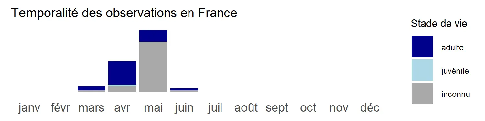

Alopecosa fabrilis (difficulté 2) LC
Condition :
photo necessaire pour validation de l’observation
photo necessaire pour validation de l’observation
Confusions possibles :
Pardosa, Alopecosa, Trochosa
Pardosa, Alopecosa, Trochosa
Taille du corps: 10-12 mm (♂) / 11-14.7 mm (♀)
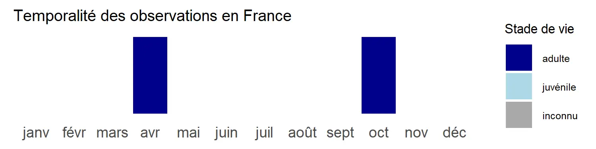

Alopecosa pulverulenta (non identifiable à vue) LC
Taille du corps: 7.0-9.0 mm (♂) / 7.5-11.0 mm (♀)
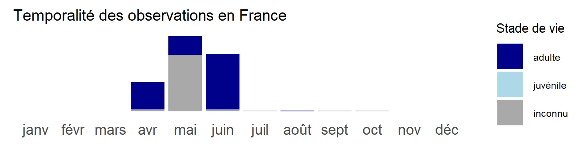

Alopecosa striatipes (difficulté 3) LC
Condition :
photo necessaire pour validation de la donnée
photo necessaire pour validation de la donnée
Confusions possibles :
Pardosa, Alopecosa, Trochosa
Pardosa, Alopecosa, Trochosa
Taille du corps: 11 mm (♂) / 13 mm (♀)

Alopecosa trabalis (difficulté 3) LC
Condition :
male uniquement, photo necessaire pour validation de l’observation
male uniquement, photo necessaire pour validation de l’observation
Confusions possibles :
Pardosa, Alopecosa, Trochosa
Pardosa, Alopecosa, Trochosa
Taille du corps: 8-11 mm (♂) / 8.5-15 mm (♀)

Arctosa
7 espèces en Île-de-France dont 1 identifiable à vue
Arctosa cinerea (non identifiable à vue) LC
Taille du corps: 9-17 mm (♂) / 10-18 mm (♀)


Arctosa figurata (non identifiable à vue) NT
Taille du corps: 4.8 mm (♂) / 6.7 mm (♀)
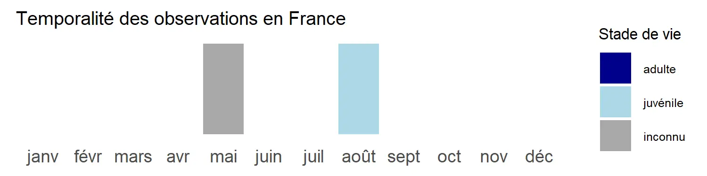


Arctosa leopardus (non identifiable à vue) LC
Taille du corps: 5-7 mm (♂) / 8.5-10 mm (♀)
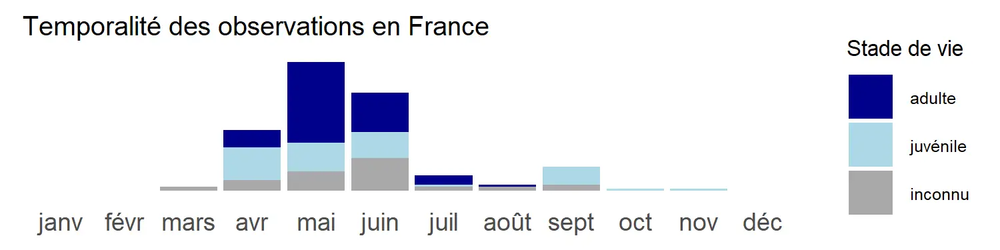

Arctosa lutetiana (non identifiable à vue) LC
Taille du corps: 9 mm (♂) / 6.5-9.4 mm (♀)
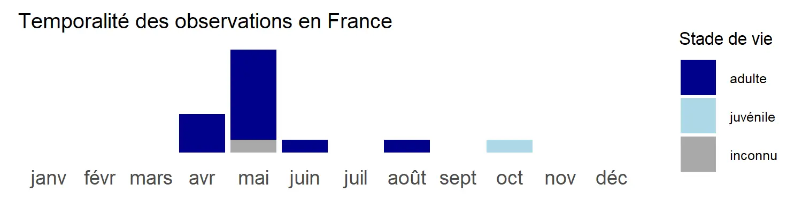


Arctosa maculata (non identifiable à vue) LC
Taille du corps: 9-11 mm (♂) / 11-14 mm (♀)

Arctosa perita (difficulté 2) LC
Confusions possibles :
Pardosa, Alopecosa, Trochosa
Pardosa, Alopecosa, Trochosa
Taille du corps: 6-8 mm (♂) / 6-8 mm (♀)
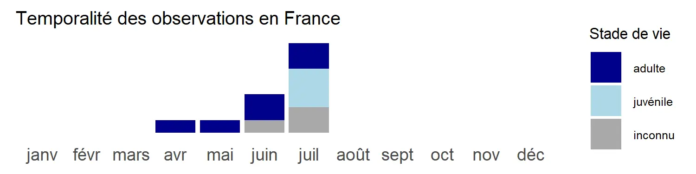

Arctosa villica (non identifiable à vue) DD
Taille du corps: 13 mm (♀)

Aulonia
1 espèce en Île-de-France identifiable à vue
Aulonia albimana (difficulté 1) LC
Taille du corps: 3.8-4.1 mm (♂) / 4.1-4.4 mm (♀)

Hogna
1 espèce en Île-de-France identifiable à vue
Hogna radiata (difficulté 2) LC
Condition :
photo indispensable pour validation de l’observation
photo indispensable pour validation de l’observation
Confusions possibles :
Pardosa, Alopecosa, Trochosa
Pardosa, Alopecosa, Trochosa
Taille du corps: 9-18 mm (♂) / 12.5-25 mm (♀)
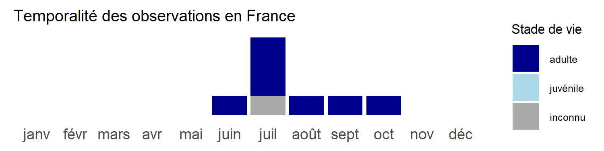

Hygrolycosa
1 espèce en Île-de-France identifiable à vue
Hygrolycosa rubrofasciata (difficulté 3) LC
Confusions possibles :
Pardosa
Pardosa
Taille du corps: 5.0-5.5 mm (♂) / 5.5-6.0 mm (♀)

Pardosa
15 espèces en Île-de-France dont 2 identifiables à vue
Pardosa agrestis (non identifiable à vue) LC
Taille du corps: 4.5-5 mm (♂) / 5 mm (♀)
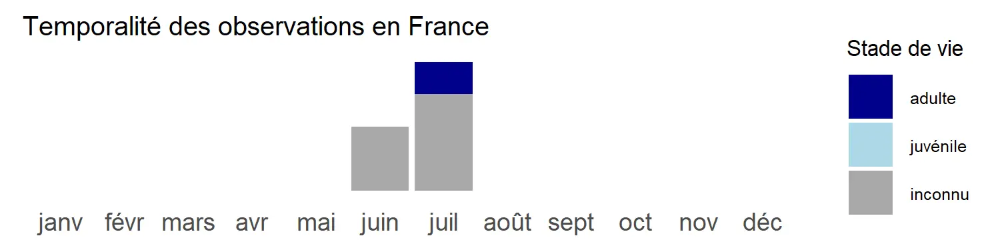

Pardosa agricola (non identifiable à vue) LC
Taille du corps: 5.5-6.5 mm (♂) / 6-8 mm (♀)

Pardosa amentata (non identifiable à vue) LC
Taille du corps: 5.5-6.5 mm (♂) / 6.0-8.0 mm (♀)
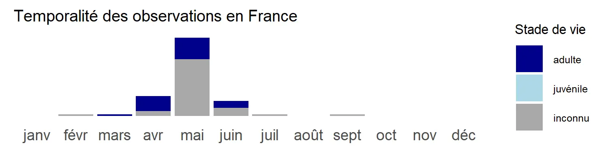

Pardosa bifasciata (difficulté 3) LC
Confusions possibles :
Pardosa, Alopecosa
Pardosa, Alopecosa
Taille du corps: 4.4 mm (♂) / 6 mm (♀)
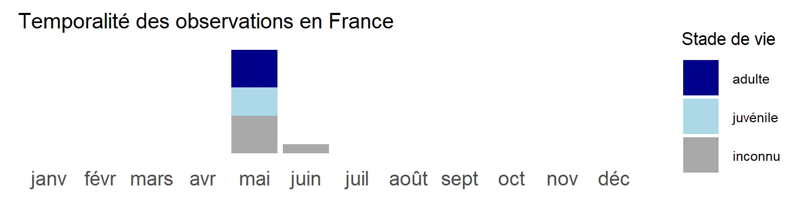


Pardosa hortensis (non identifiable à vue) LC
Taille du corps: 4.5 mm (♂) / 5-6 mm (♀)

Pardosa lugubris (non identifiable à vue) LC
Taille du corps: 4.6-5.0 mm (♂) / 4.8-7.0 mm (♀)

Pardosa monticola (non identifiable à vue) LC
Taille du corps: 4-5 mm (♂) / 5-7 mm (♀)
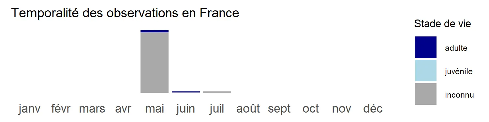

Pardosa nigriceps (difficulté 3) LC
Confusions possibles :
Pardosa
Pardosa
Taille du corps: 4.5-5.4 mm (♂) / 5-6.8 mm (♀)
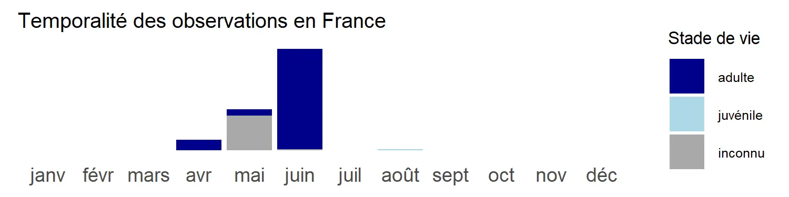

Pardosa paludicola (non identifiable à vue) LC
Taille du corps: 6-7 mm (♂) / 8-9.5 mm (♀)
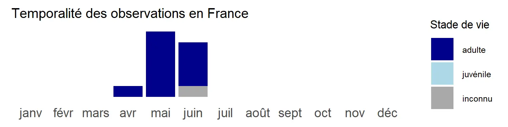

Pardosa palustris (non identifiable à vue) LC
Taille du corps: 5-6 mm (♂) / 6-7 mm (♀)
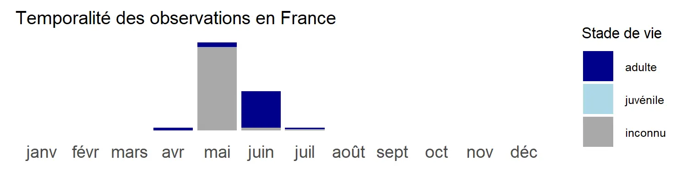

Pardosa prativaga (non identifiable à vue) LC
Taille du corps: 5.2-6.5 mm (♂) / 5.2-7.5 mm (♀)
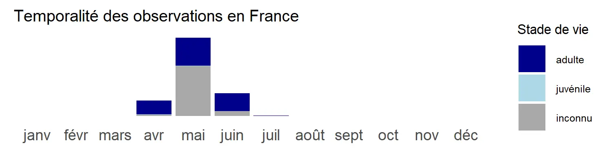

Pardosa proxima (non identifiable à vue) LC
Taille du corps: 5 mm (♂) / 7-8 mm (♀)
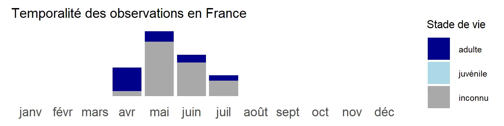

Pardosa pullata (non identifiable à vue) LC
Taille du corps: 4-5 mm (♂) / 4-6 mm (♀)
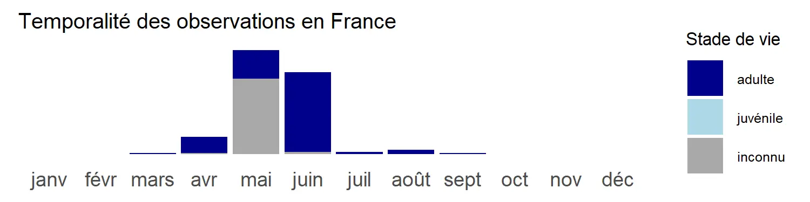

Pardosa saltans (non identifiable à vue) LC
Taille du corps: 4.6-6.0 mm (♂) / 5.5-8.0 mm (♀)
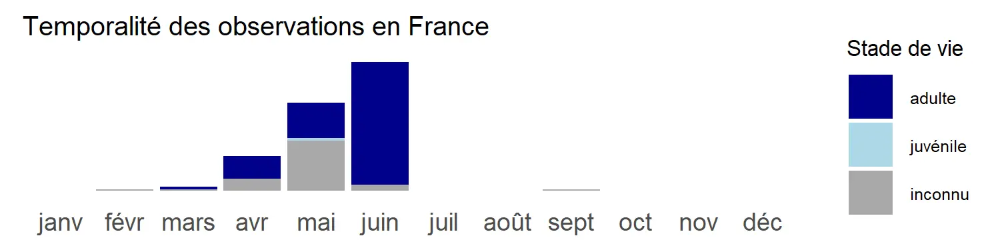

Pardosa tenuipes (non identifiable à vue) LC
Taille du corps: 4.32 - 5.70 mm (♂) / 5.28 - 5.91 mm (♀)


Pirata
1 espèce en Île-de-France identifiable à vue
Pirata piraticus (difficulté 3) LC
Condition :
uniquement les individus à flanc poudrés de blanc, tache cardiaque surlignée de blanc et bordure blanche sur le prosoma
uniquement les individus à flanc poudrés de blanc, tache cardiaque surlignée de blanc et bordure blanche sur le prosoma
Confusions possibles :
Pirata spp. Piratula spp.
Pirata spp. Piratula spp.
Taille du corps: 4-8.2 mm (♂) / 4.5-9 mm (♀)
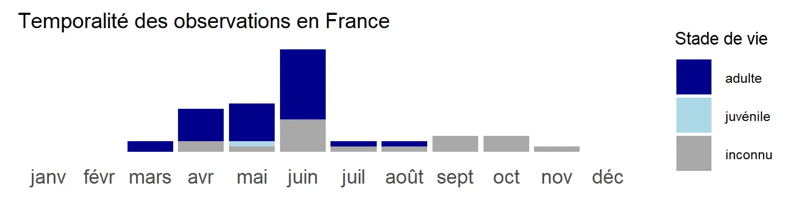


Piratula
3 espèces en Île-de-France, aucune identifiable à vue
Piratula hygrophila (non identifiable à vue) LC
Taille du corps: 4.5-5.5 mm (♂) / 5.0-6.0 mm (♀)
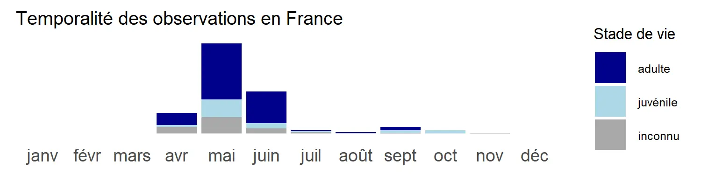

Piratula latitans (non identifiable à vue) LC
Taille du corps: 2.5-4.5 mm (♂) / 4-5 mm (♀)
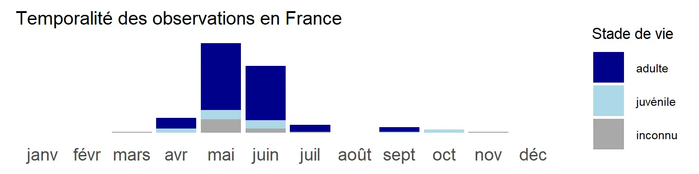


Piratula uliginosa (non identifiable à vue) LC
Taille du corps: 4-5 mm (♂) / 4.0-5.2 mm (♀)
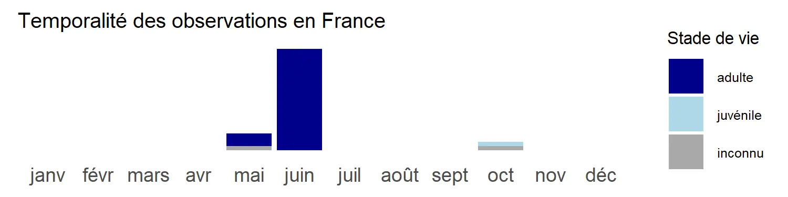


Trochosa
4 espèces en Île-de-France, aucune identifiable à vue
Trochosa robusta (non identifiable à vue) LC
Taille du corps: 9-18 mm (♂) / 11-18 mm (♀)


Trochosa ruricola (non identifiable à vue) LC
Taille du corps: 7-9.5 mm (♂) / 8-17 mm (♀)
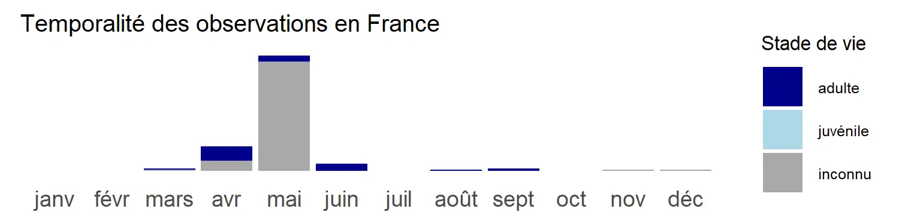

Trochosa spinipalpis (non identifiable à vue) LC
Taille du corps: 6-8 mm (♂) / 9-12 mm (♀)
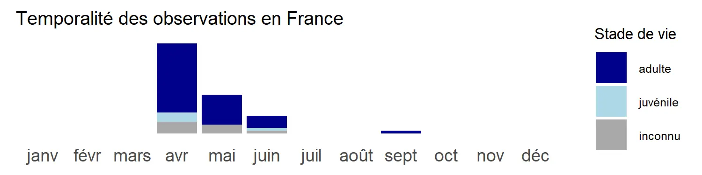

Trochosa terricola (non identifiable à vue) LC
Mâle :
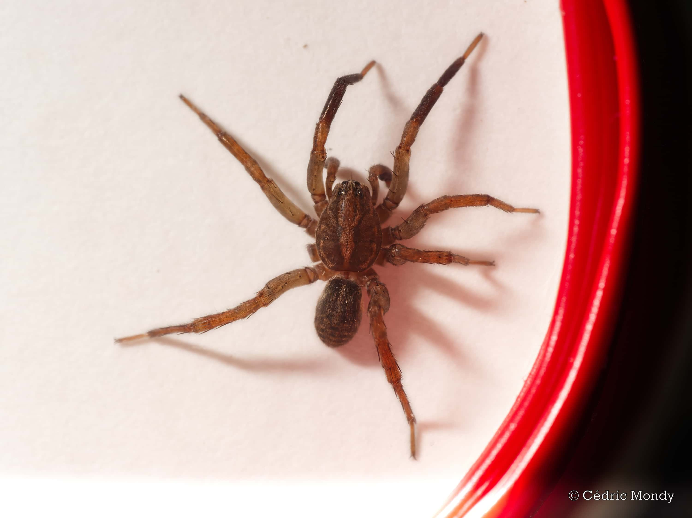
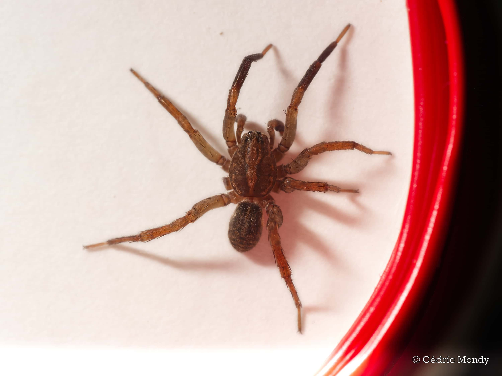
Taille du corps: 7-9 mm (♂) / 7-14 mm (♀)
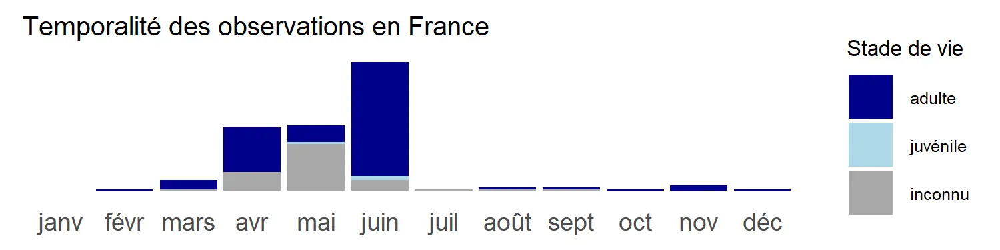

Xerolycosa
2 espèces en Île-de-France, aucune identifiable à vue
Xerolycosa miniata (non identifiable à vue) LC
Taille du corps: 4.7-5.5 mm (♂) / 5-7.6 mm (♀)
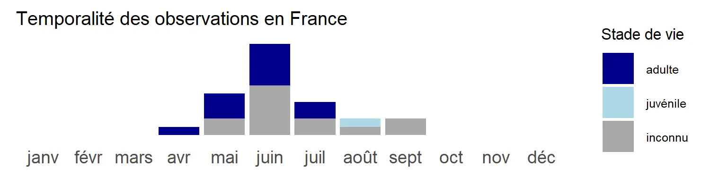

Xerolycosa nemoralis (non identifiable à vue) LC
Taille du corps: 4.5-5.7 mm (♂) / 5.0-7.5 mm (♀)

×